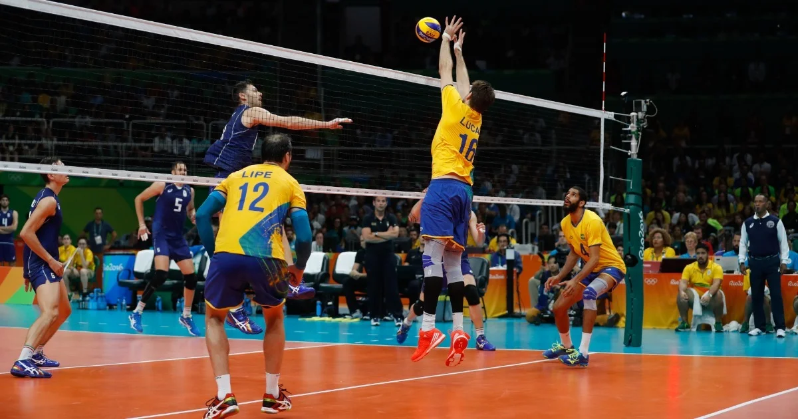
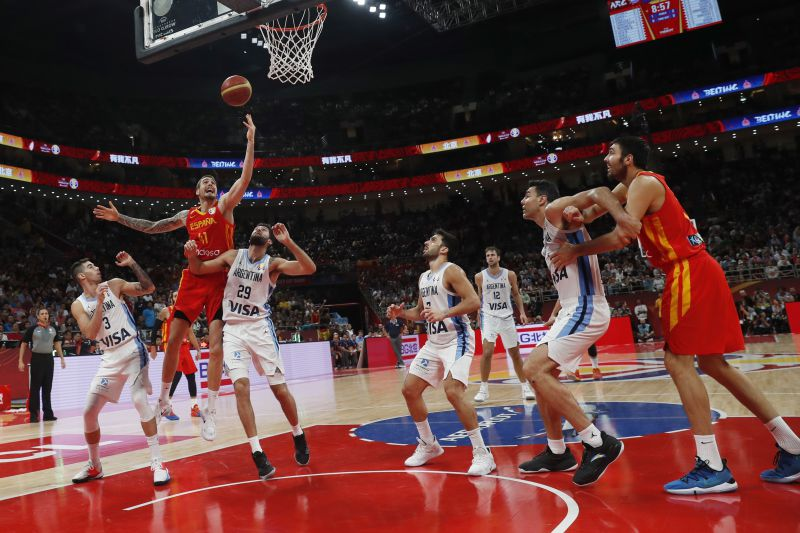
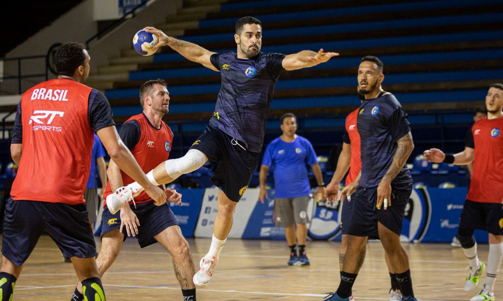
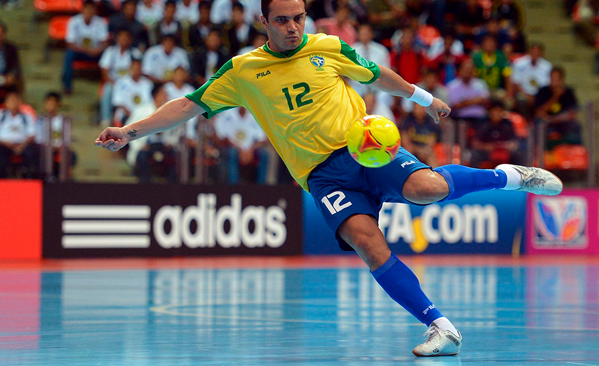
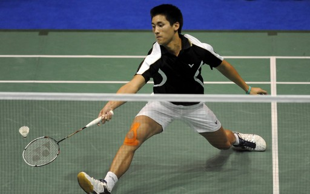
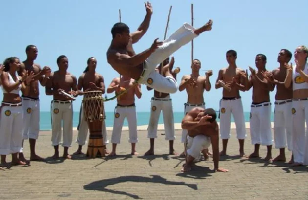
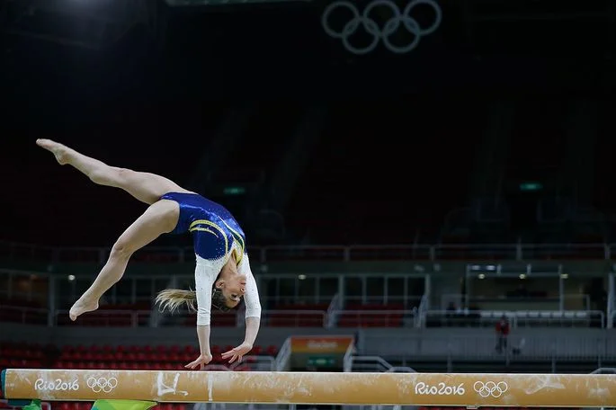
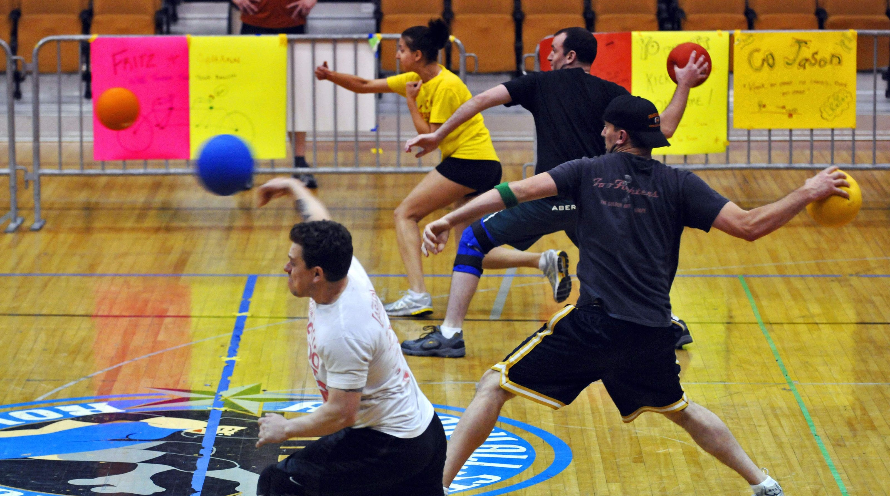

Introdução
Educação Física é uma disciplina que visa o aperfeiçoamento, controle e manutenção da saúde do corpo da mente do ser humano.
Consiste em um conjunto de atividades físicas planejadas e estruturadas para promover o condicionamento físico de crianças, jovens e adultos através da prática de diferentes modalidades esportivas.
As aulas de Educação Física são orientadas por um profissional formado no curso superior de Educação Física, cujas matérias estão ligadas essencialmente às Ciências Biológicas e da Saúde. O profissional sai com preparação para o ensino pedagógico e para atuar principalmente em ambientes escolares.
O objeto de estudo da Educação Física é o ser humano, que além de biológico, é emocional, cognitivo e social. Por isso, a Educação Física se utiliza de outras ciências para observar e estudar todas as dimensões do homem. Ela exerce potencialidades, desenvolve funções mentais, coordenação motora, criatividade, livre expressão e sociabilidade.
Esportes
Conheça agora alguns dos esportes praticados na matéria de Educação Física:
Voleibol
O voleibol ou vôlei é um esporte praticado entre duas equipes numa quadra retangular (aberta ou fechada). Ela é dividida por uma rede colocada verticalmente sobre a linha central. O voleibol é jogado com uma bola e inclui diversos passes com as mãos. O objetivo principal é lançar a bola por cima da rede e fazê-la tocar no chão do adversário.
Basquetebol
O basquetebol, ou simplesmente basquete, é um esporte coletivo praticado entre duas equipes. Ele é jogado com uma bola, onde o objetivo é inseri-la no cesto fixo que está localizado nas extremidades da quadra. Atualmente, o basquetebol é um dos jogos olímpicos mais populares no mundo. Nas escolas, é um dos esportes mais praticados nas aulas de educação física.
Handebol
O handebol (ou andebol) é um esporte coletivo que envolve passes de bola com as mãos. Praticado entre duas equipes, o nome dessa modalidade esportiva é proveniente da língua inglesa, visto que hand significa “mão”. A bola do handebol é feita de couro e para as equipes masculinas ela possui um diâmetro maior. Sendo assim, para homens ela tem 58,4 cm de circunferência e massa de 453,6 gramas. Já para mulheres, ela tem 56,4 cm de circunferência e massa de 368,5 gramas.
Futsal
O futsal, também chamado de futebol de salão, é um esporte coletivo semelhante ao futebol de campo, porém possui suas peculiaridades. Ainda que sejam semelhantes, o futsal possui regras específicas e diferencia-se, por exemplo, pelo número de jogadores e as dimensões do espaço de jogo.
Badminton
Badminton é um esporte dinâmico praticado entre dois ou quatro jogadores. Ainda que seja semelhante ao tênis, que usa raquetes e está dividido por uma rede, ele possui suas peculiaridades. Ao invés de uma bola, ele é jogado com uma espécie de peteca, chamada de volante ou birdie. Ao contrário do que se possa imaginar, ela atinge velocidade superior a de uma bola de tênis, podendo chegar até 300 km/h. Essa modalidade exige um grande treinamento físico por parte dos atletas e envolve agilidade, coordenação e reflexo. Ela é praticada por homens, mulheres e crianças, sendo considerado o esporte de raquete mais rápido do mundo.
Capoeira
A capoeira é uma expressão cultural brasileira que compreende os elementos: arte-marcial, esporte, cultura popular, dança e música. Ela constrói relações de sociabilidade e familiaridade entre mestres e discípulos, sendo difundida de modo oral e gestual nas ruas e academias. A capoeira foi criada no século XVII pelo povo escravizado da etnia banto e se difundiu por todo o Brasil. Hoje é considerada um dos maiores símbolos da cultura brasileira.
Ginástica
A ginástica é uma prática esportiva que se divide em dois tipos, as ginásticas competitivas e as não competitivas. As competitivas, que entram em competições como as Olimpíadas, além de trabalhar com a estrutura física, através de movimentos que exigem força, elasticidade e agilidade, também exercitam a mente dos praticantes, pois a sua prática requer concentração e raciocínio. As não competitivas têm como objetivo não as competições, mas a saúde, o bem-estar e também a beleza do corpo.
Beisebol

O beisebol, basebol ou baseball é um esporte coletivo praticado com uma bola e um taco. O termo vem da língua inglesa “baseball”. Nos Estados Unidos é um dos esportes mais populares, o qual é praticado por homens e mulheres. A sua prática exige muito treinamento dos jogadores. Agilidade, condicionamento físico e precisão são indispensáveis.
Esgrima

Esgrima é um esporte olímpico disputado com espada, florete e sabre, que tem como objetivo tocar o adversário com uma dessas armas brancas - de acordo com a modalidade da disputa - sem que haja contato corporal. Sua origem remonta à pré-história, uma vez que a arte da caça dá indícios do que viriam a se tornar as práticas esportivas. A esgrima começou a ser disputada nas olimpíadas em 1896, em Atenas, na primeira edição dos jogos olímpicos da era moderna.
Jogo de Queimada
O jogo de Queimada ou Queimado é praticado por dois times, cujo objetivo é eliminar o adversário atingindo-os ("queimando-os") com a bola. A Queimada é popular em todo Brasil e também é chamada de "baleado", "caçador", "mata-soldado" ou "carimba".
Conclusão
Por meio de atividades físicas coletivas ou individuais, como jogos e esportes, a Educação Física promove experiências construtivas de convivência, cidadania e consciência corporal. Além, é claro, de estimular um estilo de vida saudável.
Através de atividades da Educação Física é possível criar espaços de desenvolvimento crítico, respeito às diferenças, solidariedade e cooperação. Também contribui na promoção, prevenção e reabilitação da saúde física e mental.
assim, o estudo da Educação Física é o ser humano como um todo. Isso é, aspectos emocionais, sociais, cognitivos e, claro, biológicos. Portanto, é uma área que utiliza de outras ciências para abordar o homem e todas as suas complexidades.
Essa ampla área de conhecimento permite que o profissional possa atuar em diversos campos, como de ensino e recreação, condicionamento físico, orientação, recuperação e reabilitação, turismo ecológico e treinamento de atletas.
Até a próxima! :D